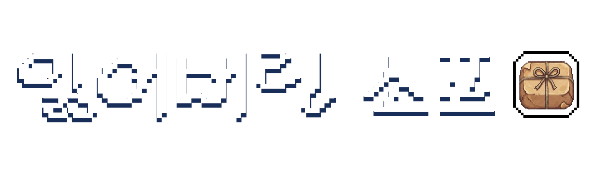
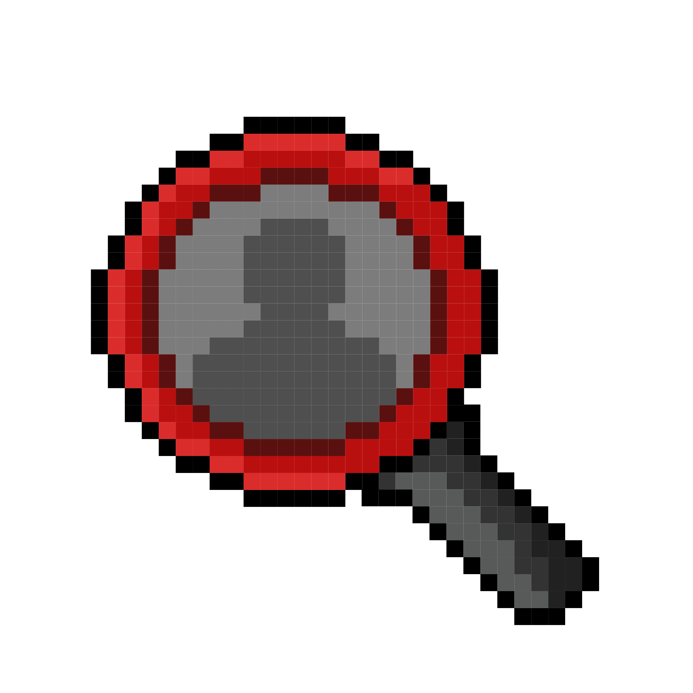
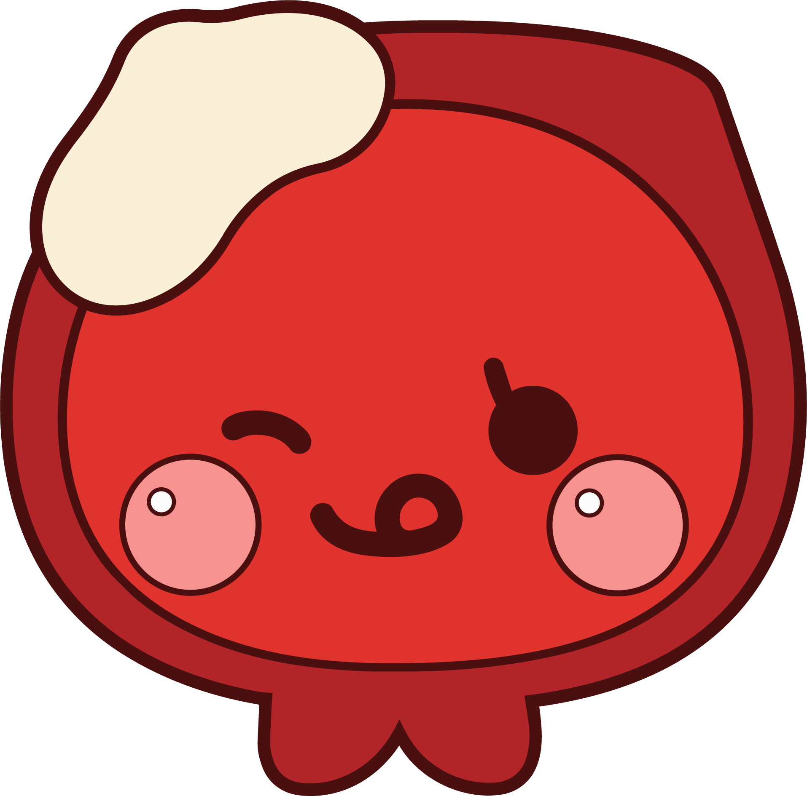

탐 정 방 문 기 록
정확한 참여자 통계 집계를 위해 실제 참여하시는 분의 정보를 정확히 기입해 주세요.
탐정명
사는곳
메일주소
※ 개인정보 수집 및 이용 안내
본 프로그램은 결과 보고(KPI) 통계 작성을 위해 거주 지역을 수집하며, 종료 후 1개월 이내 파기합니다. 동의를 거부할 수 있으나 이 경우 참여가 제한될 수 있습니다.
⚠️ 이동하실 때는 화면 대신 주변을 살펴주세요.
NPC 위의 전구를 눌러 대화를 시작하세요.
이야기
▼
미요
퀘스트 목록
▼
'잃어버린 소포'는 평양에서 부산으로 피난와 가족과 생이별을 해야했던 피난민의 실제 사연을 각색해 재구성하였습니다.

Mission Complete
이 화면을 명란스토리지 직원에게 보여주면 완료 기념품을 드립니다.
새로운 퀘스트